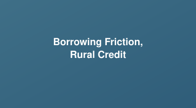

Research
My research explores how credit access, political institutions, and social identity shape household and firm decisions — combining micro-data, structural models, and field insights to study inequality, and labor and firm productivity.
Financial Frictions & Rural Credit
A key question in development economics is why productivity differs so much across regions and countries. Part of the explanation is misallocation of resources, where capital and labor are not used in the most productive way. Financial frictions, such as high and unequal borrowing costs, can prevent resources from flowing to the most productive uses.
Related Work

Borrowing Friction in the Rural Credit Market
Author: Harpreet Singh
Working paper
In many developing countries, formal credit has expanded, yet productivity growth remains limited. This project asks how large the variation in borrowing costs is across households in rural India, how much is explained by access to formal banking versus social or structural barriers (caste, income, geography), and what would happen if all households had equal access to credit.
Political Economy of Public Infrastructure
Politicians face competing pressures when allocating public infrastructure: maximizing economic returns versus securing political support. This work quantifies that trade-off using quasi-experimental variation in canal placement in Gujarat, India.
Related Work

Canal Placement: A Political or Geographical Phenomenon
Author: Harpreet Singh
Working paper
I estimate the efficiency cost of political considerations in infrastructure allocation using quasi-experimental variation in canal placement across 224 villages in Gujarat, India. Exploiting close elections and politician–voter caste alignment as instrumental variables, I find that while politicians predominantly allocate canals to high-productivity villages, political targeting of opposition caste groups distorts this allocation at the margin — roughly 14% of canals are misallocated for political reasons. A counterfactual, productivity-maximizing allocation would raise aggregate agricultural output by an additional 12.6% (26.5 million kg annually).
Gender, Bargaining Power & Household Welfare
Evidence from the literature suggests that women’s decision-making power within the household plays an important role in household welfare. This line of work studies how financial inclusion and market access shift that bargaining power, and what that means for resilience to shocks and for poverty.
Related Work

Building Resilience through Women’s Bargaining Power during the Pandemic
Authors: Singh, H., Pandey, V.
Submitted
Can increased women’s relative bargaining power within households improve resilience to large-scale covariate shocks such as COVID-19? Using two rounds of household surveys combined with a lab-in-the-field experiment with spouses in rural dairy households, a Bartik-like IV specification shows that a unit improvement in women’s bargaining power led to a 3.82% reduction in vulnerability to food poverty during the COVID-19 lockdown.

Financial Inclusion, Female Bargaining Power, and Household Welfare
Author: Harpreet Singh
Working paper
Using data from the SEPRI (2016) and JPM (2016) surveys across 12 districts of Uttar Pradesh and a 3SLS approach, this study finds that a woman owning a bank account increases her share of household decision-making by 33.8%, reducing the household’s vulnerability to falling below the poverty line.
Rural Livelihoods & Program Evaluation
Policy-facing work for the World Bank on the DAY-NRLM programme — India’s national rural livelihoods mission — looking at enterprise promotion and the long-term welfare impacts of self-help-group-based interventions.
Reports

Status of DAY-NRLM Affiliated Rural Enterprises: A Technical Report
Author: Harpreet Singh
World Bank Report, 2024
DAY-NRLM aims at eliminating rural poverty through promotion of multiple livelihoods for rural poor households, enhancing the availability of rural livelihoods by promoting enterprises within rural households.

Program Evaluation of DAY-NRLM: Long-Term Welfare Impacts on Rural Households
Author: Harpreet Singh
World Bank Report, 2024
The DAY-NRLM program intensified the self-help group (SHG) approach to human development, aiming to empower less privileged households by granting access to credit, skills, social capital, and leadership prospects.